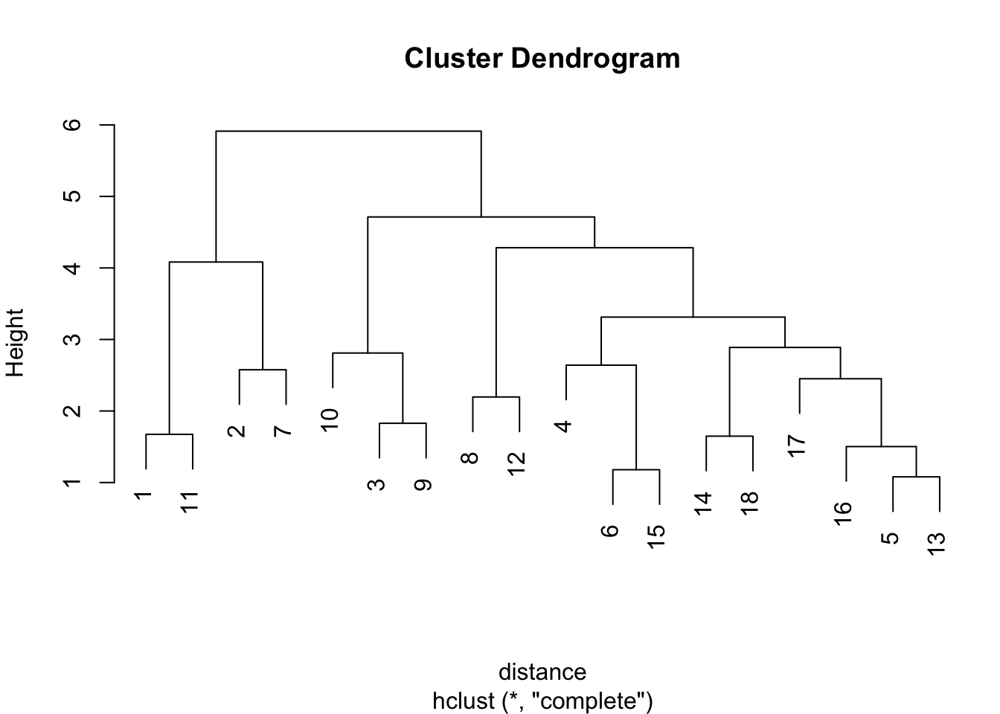
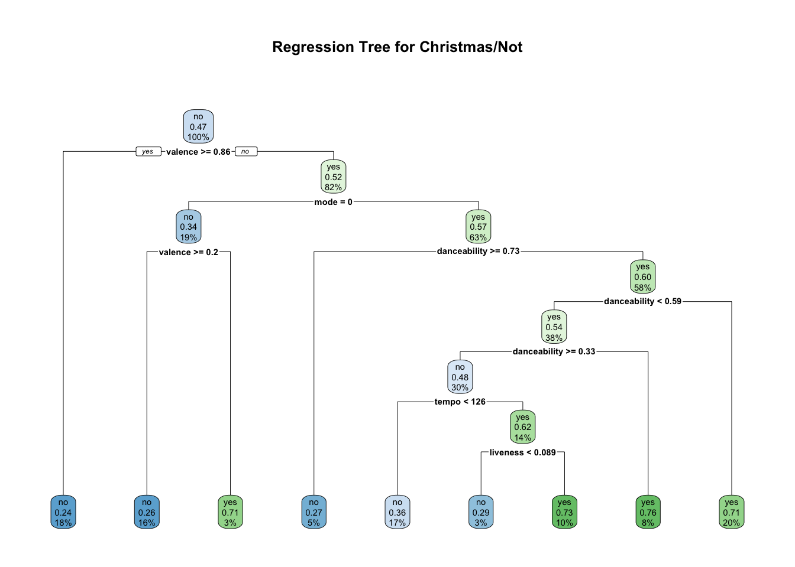

Week 5: Testing Hypotheses with Spotify
Plan for the Week
This week, we will be going over:
- basics for your mid-term literature review
- testing some basic hypotheses of continuous data with linear regression
- testing some basic hypotheses of categorical data with logistic regressions
- evaluating model fits
Literature Reviews
- Be sure to include an overview of previous research related to the topic. If you’re interested in how tempo changes over time in hip-hop, for example, you should include sources on tempo change, hip-hop styles, and changing performance practice within the genre.
- It need not be all-encompassing, but it should try to cover as much ground as possible.
- Address a gap in the current literature, or that between theory and research. End with a discussion of your study, and how it hopes to fill in these gaps.
- There is a rubric online.
- Purdue’s writing lab has a good page about it here.
Testing a Hypothesis with Continuous Data
Although we’ve spent a fair bit of time going over the mechanics of the Spotify data, and how to extract information from it, we haven’t spent much time actually discussing testing hypotheses with your data. As many of you are doing hypothesis-based work for your final project, it might be a good time to step back and look some approaches to this.
Hypothesis 1: Do Jay-Z’s Songs Get Slower Over Time?
I think that Jay-Z’s songs are getting slower over time. Let’s test it.
We’ll start by grabbing our data:
jayz <- get_artist_audio_features('Jay-Z')Looking at tempo over time
We can start by eyeballing the data. Here is how we’d do it with base R (no ggplot/tidyverse):
plot(tempo ~ album_release_year, data=jayz)
abline(lm(tempo ~ album_release_year, data=jayz), col="red")If we’d like to use ggplot it can give us some confidence bars (the default here is a 95% confidence interval):
ggplot(jayz, aes(album_release_year, tempo) ) + geom_point() +
stat_smooth(method = lm) +
theme_bw()`geom_smooth()` using formula = 'y ~ x'
So it looks promising. We can run a linear regression with a simple lm command. Here we can get a summary of the model pretty easily, as well.
summary(lm(tempo ~ album_release_year, data=jayz))
Call:
lm(formula = tempo ~ album_release_year, data = jayz)
Residuals:
Min 1Q Median 3Q Max
-44.84 -21.17 -11.79 12.22 92.18
Coefficients:
Estimate Std. Error t value Pr(>|t|)
(Intercept) -2158.9919 396.7564 -5.442 6.99e-08 ***
album_release_year 1.1306 0.1979 5.714 1.55e-08 ***
---
Signif. codes: 0 '***' 0.001 '**' 0.01 '*' 0.05 '.' 0.1 ' ' 1
Residual standard error: 30.94 on 815 degrees of freedom
Multiple R-squared: 0.03852, Adjusted R-squared: 0.03734
F-statistic: 32.65 on 1 and 815 DF, p-value: 1.547e-08So, as we can see from the results here, it’s significant (p < .001), but it really doesn’t account for much of the variance (an adjusted R-squared of .037).
Post-Hoc Analyses
Perhaps we can look at how other variables might be predictive of the year of the recording.
Let’s look at how tempo, danceability, valence, speechiness, and energy might improve the model.
summary(lm(album_release_year ~ tempo + danceability + valence + speechiness + energy, data=jayz))
Call:
lm(formula = album_release_year ~ tempo + danceability + valence +
speechiness + energy, data = jayz)
Residuals:
Min 1Q Median 3Q Max
-11.2530 -3.4825 -0.2837 3.5690 18.2393
Coefficients:
Estimate Std. Error t value Pr(>|t|)
(Intercept) 2.016e+03 1.826e+00 1104.163 < 2e-16 ***
tempo 2.861e-02 5.603e-03 5.105 4.12e-07 ***
danceability -5.986e+00 1.519e+00 -3.942 8.77e-05 ***
valence -6.849e+00 9.630e-01 -7.112 2.51e-12 ***
speechiness -7.808e+00 1.160e+00 -6.730 3.20e-11 ***
energy -4.484e+00 1.348e+00 -3.326 0.000921 ***
---
Signif. codes: 0 '***' 0.001 '**' 0.01 '*' 0.05 '.' 0.1 ' ' 1
Residual standard error: 4.885 on 811 degrees of freedom
Multiple R-squared: 0.2084, Adjusted R-squared: 0.2035
F-statistic: 42.69 on 5 and 811 DF, p-value: < 2.2e-16So we have a more predictive model, with an adjusted R-squared of about .20.
There are some remaining questions, however. Firstly, is there covariance at play?
We can use the variance inflation factor (VIF) to look at this. Typically, each variable should be less than 5.
library(car)Loading required package: carData
Attaching package: 'car'The following object is masked from 'package:dplyr':
recodeThe following object is masked from 'package:purrr':
somejayz_model <- lm(album_release_year ~ tempo + danceability + valence + speechiness + energy, data=jayz)
vif(jayz_model) tempo danceability valence speechiness energy
1.067352 1.350387 1.228451 1.093354 1.253967 A correlation plot can help us to visualize this a bit more.
library(corrplot)corrplot 0.92 loadedjz <- jayz %>%
select(c("acousticness", "liveness", "danceability", "loudness", "speechiness", "valence"))
x <- as.matrix(cor(jz))
round(x, 2) acousticness liveness danceability loudness speechiness valence
acousticness 1.00 0.14 0.07 -0.12 0.33 0.07
liveness 0.14 1.00 -0.20 0.01 0.03 -0.11
danceability 0.07 -0.20 1.00 -0.17 -0.01 0.28
loudness -0.12 0.01 -0.17 1.00 -0.20 0.03
speechiness 0.33 0.03 -0.01 -0.20 1.00 0.18
valence 0.07 -0.11 0.28 0.03 0.18 1.00 corrplot(x, method="pie")Sidenote: Is/Are the data normal?
We can test to see if the tempo data is normally distributed:
qqnorm(jayz$tempo)
hist(jayz$tempo)shapiro.test(jayz$tempo)
Shapiro-Wilk normality test
data: jayz$tempo
W = 0.78869, p-value < 2.2e-16ks.test(jayz$tempo, "pnorm")Warning in ks.test.default(jayz$tempo, "pnorm"): ties should not be present for
the Kolmogorov-Smirnov test
Asymptotic one-sample Kolmogorov-Smirnov test
data: jayz$tempo
D = 1, p-value < 2.2e-16
alternative hypothesis: two-sidedAt the moment, it doesn’t seem to be…
Stepwise Entry Regression
summary(step(lm(album_release_year ~ danceability +
tempo + acousticness +
speechiness + valence, data=jayz),
direction="backward"))Start: AIC=2573.56
album_release_year ~ danceability + tempo + acousticness + speechiness +
valence
Df Sum of Sq RSS AIC
<none> 18788 2573.6
- danceability 1 243.73 19032 2582.1
- tempo 1 714.38 19502 2602.1
- acousticness 1 826.79 19614 2606.7
- speechiness 1 1422.54 20210 2631.2
- valence 1 1687.89 20476 2641.8
Call:
lm(formula = album_release_year ~ danceability + tempo + acousticness +
speechiness + valence, data = jayz)
Residuals:
Min 1Q Median 3Q Max
-12.9398 -3.6858 -0.2579 3.4408 16.3345
Coefficients:
Estimate Std. Error t value Pr(>|t|)
(Intercept) 2.011e+03 1.257e+00 1599.612 < 2e-16 ***
danceability -4.496e+00 1.386e+00 -3.244 0.00123 **
tempo 3.075e-02 5.538e-03 5.553 3.80e-08 ***
acousticness 6.752e+00 1.130e+00 5.974 3.46e-09 ***
speechiness -9.233e+00 1.178e+00 -7.836 1.46e-14 ***
valence -7.750e+00 9.080e-01 -8.536 < 2e-16 ***
---
Signif. codes: 0 '***' 0.001 '**' 0.01 '*' 0.05 '.' 0.1 ' ' 1
Residual standard error: 4.813 on 811 degrees of freedom
Multiple R-squared: 0.2314, Adjusted R-squared: 0.2267
F-statistic: 48.83 on 5 and 811 DF, p-value: < 2.2e-16summary(step(lm(album_release_year ~ danceability +
tempo + acousticness +
speechiness + valence, data=jayz),
direction="forward"))Start: AIC=2573.56
album_release_year ~ danceability + tempo + acousticness + speechiness +
valence
Call:
lm(formula = album_release_year ~ danceability + tempo + acousticness +
speechiness + valence, data = jayz)
Residuals:
Min 1Q Median 3Q Max
-12.9398 -3.6858 -0.2579 3.4408 16.3345
Coefficients:
Estimate Std. Error t value Pr(>|t|)
(Intercept) 2.011e+03 1.257e+00 1599.612 < 2e-16 ***
danceability -4.496e+00 1.386e+00 -3.244 0.00123 **
tempo 3.075e-02 5.538e-03 5.553 3.80e-08 ***
acousticness 6.752e+00 1.130e+00 5.974 3.46e-09 ***
speechiness -9.233e+00 1.178e+00 -7.836 1.46e-14 ***
valence -7.750e+00 9.080e-01 -8.536 < 2e-16 ***
---
Signif. codes: 0 '***' 0.001 '**' 0.01 '*' 0.05 '.' 0.1 ' ' 1
Residual standard error: 4.813 on 811 degrees of freedom
Multiple R-squared: 0.2314, Adjusted R-squared: 0.2267
F-statistic: 48.83 on 5 and 811 DF, p-value: < 2.2e-16Comparing Fits:
We could construct a few models But how can we tell which of these is more predictable? For this, we can look at Akaike’s ‘An Information Criterion’(or AIC). The lower number is better, and any difference of more than 2 is considered a statistically significant difference fit.
dance_model <- lm(danceability ~ album_release_year, data=jayz)
acoustic_model <- lm(acousticness ~ album_release_year, data=jayz)
speech_model <- lm(speechiness ~ album_release_year, data=jayz)
valence_model <- lm(valence ~ album_release_year, data=jayz)
tempo_model <- lm(tempo ~ album_release_year, data=jayz)
combined_model <- lm(album_release_year ~ tempo + acousticness + speechiness + valence, data=jayz)
AIC(dance_model,
acoustic_model,
tempo_model,
speech_model,
valence_model,
combined_model) df AIC
dance_model 3 -1036.7120
acoustic_model 3 -686.8298
tempo_model 3 7930.2701
speech_model 3 -782.5959
valence_model 3 -438.7779
combined_model 6 4902.6326The combined model doesn’t seem to do terribly well here, which seems to muddy the question up a bit.
Is a linear model the best approach?
We can adjust how we are viewing this data (linear or polynomial fit) a bit with the code below. Here we can plot our data as a line:
ggplot(jayz, aes(album_release_year, tempo) ) + geom_point() +
stat_smooth(method = lm, formula = y ~ poly(x, 1, raw = TRUE)) +
theme_bw()
And here we have it as a second order polynomial:
ggplot(jayz, aes(album_release_year, tempo) ) + geom_point() +
stat_smooth(method = lm, formula = y ~ poly(x, 2, raw = TRUE)) +
theme_bw()And we can compare fits here:
linear <- lm(album_release_year ~ tempo, data = jayz)
poly_2 <- lm(album_release_year ~ tempo + I(album_release_year^2), data = jayz)
AIC(linear,
poly_2) df AIC
linear 3 5069.029
poly_2 4 -5640.652Predicting a categorical variable
What does it look like to predict a categorical variable in R? We might explore this question by hypothesizing that musical features might be predictive of mode (labeled in Spotify as major or minor: 1 or 0).
Here is what a binomial logistic regression would look like:
jayz.log <- glm(mode ~ tempo + danceability + valence +
speechiness + acousticness, family = binomial, data = jayz)And it looks like “speechiness” is the most predictive of mode here.
summary(jayz.log)
Call:
glm(formula = mode ~ tempo + danceability + valence + speechiness +
acousticness, family = binomial, data = jayz)
Deviance Residuals:
Min 1Q Median 3Q Max
-1.8836 -1.2367 0.9073 1.0739 1.3806
Coefficients:
Estimate Std. Error z value Pr(>|z|)
(Intercept) -1.468e-01 5.364e-01 -0.274 0.7843
tempo 3.210e-06 2.365e-03 0.001 0.9989
danceability 1.062e-01 5.893e-01 0.180 0.8570
valence -5.733e-01 3.911e-01 -1.466 0.1427
speechiness 2.561e+00 5.483e-01 4.671 3e-06 ***
acousticness -9.680e-01 4.849e-01 -1.996 0.0459 *
---
Signif. codes: 0 '***' 0.001 '**' 0.01 '*' 0.05 '.' 0.1 ' ' 1
(Dispersion parameter for binomial family taken to be 1)
Null deviance: 1120.6 on 816 degrees of freedom
Residual deviance: 1095.8 on 811 degrees of freedom
AIC: 1107.8
Number of Fisher Scoring iterations: 4We can plot the log odds ratios as well:
CI <- exp(confint(jayz.log))[-1,]Waiting for profiling to be done...sjPlot::plot_model(jayz.log,
axis.lim = c(min(CI), max(CI)),
auto.label = F,
show.values = T) +
theme_bw()Wednesday
Clustering
Cluster analysis is a form of statistical data analysis in which subsets (called “clusters”) are formed according to some notion of similarity. There are many different variants of cluster analysis, but most are hierarchical–in which low-level clusters are successively joined together to make larger clusters, and so on, until everything is clustered into one large group. The result is a cluster tree or dendrogram.
How does the R hclust function work?
The hclust function is part of the default package in R, and it clusters based on dissimilarities in the data. There are different algorithms it can use, but the default is Ward’s minimum variance. It requires some distance to be calculated first, so the dist function is used on the data. Again there are many options here, but the default is to simply calculate the Euclidean distance between the values.
The documentation states:
This function performs a hierarchical cluster analysis using a set of dissimilarities for the n objects being clustered. Initially, each object is assigned to its own cluster and then the algorithm proceeds iteratively, at each stage joining the two most similar clusters, continuing until there is just a single cluster. At each stage distances between clusters are recomputed by the Lance–Williams dissimilarity update formula according to the particular clustering method being used.
The default is Ward’s minimum variance method, which:
aims at finding compact, spherical clusters. The complete linkage method finds similar clusters.
Another method is the “single linkage method”.
The single linkage method (which is closely related to the minimal spanning tree) adopts a ‘friends of friends’ clustering strategy. The other methods can be regarded as aiming for clusters with characteristics somewhere between the single and complete link methods. Note however, that methods “median” and “centroid” are not leading to a monotone distance measure, or equivalently the resulting dendrograms can have so called inversions or reversals which are hard to interpret, but note the trichotomies in Legendre and Legendre (2012).
# cluster demo modified from here:
### https://www.r-bloggers.com/2021/04/cluster-analysis-in-r/
library(tidyverse)
library(cluster)
beyonce <- read.csv("beyonce.csv")
taylor <- read.csv("taylor.csv")
df <- beyonce %>%
filter(album_name == "4") %>%
select(c("track_name", "acousticness", "liveness", "danceability", "loudness", "speechiness", "valence"))df <- df %>% distinct(track_name, .keep_all = TRUE)
## cleaning up the data.
z <- df[,-c(1,1)]
### getting means of each category.
means <- apply(z,2,mean)
### getting standard deviation of each category.
sds <- apply(z,2,sd)
### scales the data in the matrix.
scaled_data <- scale(z,center=means,scale=sds)
distance <- dist(scaled_data)And we can plot the data like this:
### helps with the size of the image.
# par(mar = c(1, 1, 1, 1))
### creates the cluster
df.hclust <- hclust(distance)
### plots the data but with row numbers.
plot(df.hclust)
And we can add the track name like so:
plot(df.hclust,labels=df$track_name,main='Default from hclust')We can clean up the plot the be along a single x-axis with the hang argument.
plot(df.hclust,hang=-1, labels=df$track_name,main='Default from hclust')Which track belongs to which cluster?
It might be helpful with this analysis to look at how each of the songs fits on the tree. We can use the cutree function, which “cuts a tree” from the cluster based on how many groups we ask it for.
The following code can tell us how many fall into each broader tree, assuming we think that the tree should be cut into three. Notice that the third branch is the most populous, with the second being the most sparsely populated.
member <- cutree(df.hclust,3)
table(member)member
1 2 3
4 3 11 But how is each category being weighted? The code below shows that acousticness and danceability do a fair bit of work in separating groups 1 and 3, and valence separates 1 and 2 from one another.
##but how are these clusters calculated?
aggregate(scaled_data,list(member),mean) Group.1 acousticness liveness danceability loudness speechiness
1 1 1.2293770 -0.3037203 -1.5341655 -0.4289046 0.3971934
2 2 0.6165508 -0.5097641 0.5152708 -1.0002027 1.0862774
3 3 -0.6151964 0.2494703 0.4173500 0.4287478 -0.4406914
valence
1 -1.2506018
2 1.0310423
3 0.1735709A slightly more even split occurs if we break it into four groups rather than three.
member <- cutree(df.hclust,4)
table(member)member
1 2 3 4
4 3 9 2 And that how they’re split into four is a bit different from how we might split them into three, but danceability and acousticness still playing a strong role.
aggregate(scaled_data,list(member),mean) Group.1 acousticness liveness danceability loudness speechiness
1 1 1.2293770 -0.3037203 -1.5341655 -0.4289046 0.3971934
2 2 0.6165508 -0.5097641 0.5152708 -1.0002027 1.0862774
3 3 -0.6115250 -0.1547202 0.4044253 0.3613888 -0.5628163
4 4 -0.6317177 2.0683279 0.4755110 0.7318636 0.1088705
valence
1 -1.25060184
2 1.03104230
3 0.05196371
4 0.72080353K-Means Clustering
We can also run a simple k-means clustering on the data. With this, we are clustering the data into k groups. R’s documentation explains it like so:
aims to partition the points into k groups such that the sum of squares from points to the assigned cluster centres is minimized. At the minimum, all cluster centres are at the mean of their Voronoi sets (the set of data points which are nearest to the cluster centre).
There are a few algorithms to pick from. R uses the Hartigan and Wong (1979) algorithm by default.
###split it into three groups
set.seed(123)
kc <- kmeans(scaled_data,3)
### add labels.
row.names(scaled_data) <- df$track_name
###get the shortest distance.
datadistshortset<-dist(scaled_data,method = "euclidean")The code below will cluster it based on this k-means clustering distance, and plot them into the amount of groups listed (here 3).
hc1 <- hclust(datadistshortset, method = "complete" )
pamvshortset <- pam(datadistshortset,3, diss = FALSE)
clusplot(pamvshortset, shade = FALSE,labels=2,col.clus="blue",col.p="red",span=FALSE,main="Cluster Mapping",cex=1.2)Example 1: Looking at Nirvana Albumss
I’m going to get the global features from Nirvana, and specifically I’m just going to look at the Unplugged in New York album. I do this in two, rather inefficient, steps: I get all of the Nirvana data and put those in a dataframe, and then I create a variable that has filtered out only the specific album I’m looking for.
nirvana <- get_artist_audio_features('nirvana')
unplugged <- filter(nirvana, album_name == "MTV Unplugged In New York")
both <- filter(nirvana, album_name == "MTV Unplugged In New York" | album_name == "Nevermind")This gets lots of data, and I’m just interested in their global measures (tempo, danceability, liveness, etc.). Here, I’ve gone with column number rather than name, but the other version might be a bit easier/cleaner. Nevertheless, this is another way of doing it:
###i've just picked out the columns I want.
selected <- c(9,10,12,14,15,16,17,18,19,30)
### This subsets the data based on only the columns I want.
unplugged <- unplugged[,selected]
### I assign the track name column (30) with the rownames, to have a labeled cluster.
rownames(unplugged) <- unplugged$track_namehc <- hclust(dist(unplugged), method = "complete", members = NULL)Warning in dist(unplugged): NAs introduced by coercionPlotting the cluster
Technically, you could just use the plot function at this point, but there are some long title names, so I added these extra plot options to make the text smaller and increase the marins.
par(cex=0.5, mar=c(5, 8, 4, 1))
plot(hc, xlab="", ylab="", main="", sub="", axes=FALSE)
par(cex=1)
title(xlab="tunes", ylab="height", main="Nirvana unplugged")
axis(2)This plot is a bit strange now, as we have a pretty big negative number on the y-axis. Nevertheless, we see some cool things. The songs written by the Meat Puppets cluster together, for example.
k-means clustering
Our next type of clustering analysis is be a k-means cluster. We will start off by using a scree plot to see how many clusters we should use. There are a number of ways of analyzing where an “elbow” on this plot might be, but many people actually just eyeball it.
unplugged <- filter(nirvana, album_name == "MTV Unplugged In New York" )
titles <- unplugged$track_name
unplugged <- unplugged[,selected]
unplugged <- scale(unplugged[,-10]) # standardize variables
unplugged <- as.data.frame(unplugged) # standardize variables
# Determine number of clusters
wss <- (nrow(unplugged)-1)*sum(apply(unplugged,2,var))
for (i in 2:9) wss[i] <- sum(kmeans(unplugged,
centers=i)$withinss)
plot(1:9, wss, type="b", xlab="Number of Clusters",
ylab="Within groups sum of squares")And now we can look at the k-means clustering based on however many clusters we think are necessary.
# K-Means Cluster Analysis
fit <- kmeans(unplugged, 3) # 3 cluster solution
# get cluster means
aggregate(unplugged,by=list(fit$cluster),FUN=mean) Group.1 danceability energy loudness speechiness acousticness
1 1 1.026773 0.1850689 0.4603061 -0.67242123 0.5744139
2 2 -0.466715 0.7286156 0.3748797 0.92850767 -1.1595582
3 3 -0.653401 -0.7679614 -0.7602098 -0.07038491 0.3532327
instrumentalness liveness valence tempo
1 -0.1528028 0.59048330 0.5986320 0.1965621
2 -0.3318123 0.09159538 0.4107587 0.7767115
3 0.4182526 -0.66375960 -0.9272390 -0.8179312# append cluster assignment
unplugged_appended <- data.frame(unplugged, fit$cluster)rownames(unplugged_appended) = titles
clusplot(unplugged_appended, fit$cluster, color=TRUE, shade=TRUE,
labels=3, lines=0)Conditional Inference Tree with Party
A conditional inference tree is basically a regression tree, and it tells you exactly how it picks apart the data in a pretty clear way.
I’ve always thought that Weezer was a bit derivative, so we might look at how we can separate them other (much better) bands, like Pavement…
pavement <- get_artist_audio_features('pavement')
weezer <- get_artist_audio_features('weezer')
pavement_weezer <-rbind(pavement, weezer)Here’s a regression tree that tries to account for the variance between deciding whether a piece is from Pavement or Weezer.
library(rpart.plot)Loading required package: rpart# grow tree
fit <- rpart(as.factor(artist_name) ~ danceability + valence + tempo + liveness, data=pavement_weezer)
printcp(fit) # display the results
Classification tree:
rpart(formula = as.factor(artist_name) ~ danceability + valence +
tempo + liveness, data = pavement_weezer)
Variables actually used in tree construction:
[1] danceability liveness valence
Root node error: 349/979 = 0.35649
n= 979
CP nsplit rel error xerror xstd
1 0.047755 0 1.00000 1.00000 0.042940
2 0.022923 4 0.80516 0.89398 0.041776
3 0.020057 5 0.78223 0.85960 0.041331
4 0.010000 6 0.76218 0.85673 0.041293plotcp(fit) # visualize cross-validation results summary(fit) # detailed summary of splitsCall:
rpart(formula = as.factor(artist_name) ~ danceability + valence +
tempo + liveness, data = pavement_weezer)
n= 979
CP nsplit rel error xerror xstd
1 0.04775549 0 1.0000000 1.0000000 0.04294041
2 0.02292264 4 0.8051576 0.8939828 0.04177567
3 0.02005731 5 0.7822350 0.8595989 0.04133127
4 0.01000000 6 0.7621777 0.8567335 0.04129270
Variable importance
danceability valence liveness tempo
61 28 10 1
Node number 1: 979 observations, complexity param=0.04775549
predicted class=Weezer expected loss=0.3564862 P(node) =1
class counts: 349 630
probabilities: 0.356 0.644
left son=2 (618 obs) right son=3 (361 obs)
Primary splits:
danceability < 0.522 to the left, improve=43.858290, (0 missing)
valence < 0.2975 to the left, improve=13.962690, (0 missing)
tempo < 142.843 to the right, improve= 7.641565, (0 missing)
liveness < 0.05625 to the right, improve= 6.520634, (0 missing)
Surrogate splits:
valence < 0.5905 to the left, agree=0.697, adj=0.177, (0 split)
liveness < 0.05625 to the right, agree=0.647, adj=0.042, (0 split)
tempo < 76.103 to the right, agree=0.635, adj=0.011, (0 split)
Node number 2: 618 observations, complexity param=0.04775549
predicted class=Weezer expected loss=0.4708738 P(node) =0.6312564
class counts: 291 327
probabilities: 0.471 0.529
left son=4 (53 obs) right son=5 (565 obs)
Primary splits:
liveness < 0.5765 to the right, improve=7.022553, (0 missing)
valence < 0.1925 to the left, improve=6.959549, (0 missing)
danceability < 0.404 to the left, improve=5.352002, (0 missing)
tempo < 125.6825 to the left, improve=4.458552, (0 missing)
Node number 3: 361 observations
predicted class=Weezer expected loss=0.1606648 P(node) =0.3687436
class counts: 58 303
probabilities: 0.161 0.839
Node number 4: 53 observations
predicted class=Pavement expected loss=0.2830189 P(node) =0.05413687
class counts: 38 15
probabilities: 0.717 0.283
Node number 5: 565 observations, complexity param=0.04775549
predicted class=Weezer expected loss=0.4477876 P(node) =0.5771195
class counts: 253 312
probabilities: 0.448 0.552
left son=10 (61 obs) right son=11 (504 obs)
Primary splits:
valence < 0.6655 to the right, improve=10.232180, (0 missing)
danceability < 0.5165 to the right, improve= 4.949092, (0 missing)
tempo < 77.8915 to the left, improve= 3.823105, (0 missing)
liveness < 0.09715 to the left, improve= 3.710828, (0 missing)
Node number 10: 61 observations
predicted class=Pavement expected loss=0.2786885 P(node) =0.06230848
class counts: 44 17
probabilities: 0.721 0.279
Node number 11: 504 observations, complexity param=0.04775549
predicted class=Weezer expected loss=0.4146825 P(node) =0.514811
class counts: 209 295
probabilities: 0.415 0.585
left son=22 (98 obs) right son=23 (406 obs)
Primary splits:
valence < 0.192 to the left, improve=7.635957, (0 missing)
danceability < 0.5165 to the right, improve=4.863906, (0 missing)
tempo < 77.8915 to the left, improve=3.964739, (0 missing)
liveness < 0.3565 to the left, improve=3.188013, (0 missing)
Surrogate splits:
tempo < 202.119 to the right, agree=0.813, adj=0.041, (0 split)
danceability < 0.196 to the left, agree=0.812, adj=0.031, (0 split)
Node number 22: 98 observations, complexity param=0.02292264
predicted class=Pavement expected loss=0.4081633 P(node) =0.1001021
class counts: 58 40
probabilities: 0.592 0.408
left son=44 (90 obs) right son=45 (8 obs)
Primary splits:
danceability < 0.497 to the left, improve=6.102494, (0 missing)
liveness < 0.09655 to the left, improve=4.191436, (0 missing)
tempo < 130.712 to the right, improve=3.409439, (0 missing)
valence < 0.113 to the right, improve=1.896793, (0 missing)
Node number 23: 406 observations, complexity param=0.02005731
predicted class=Weezer expected loss=0.3719212 P(node) =0.4147089
class counts: 151 255
probabilities: 0.372 0.628
left son=46 (7 obs) right son=47 (399 obs)
Primary splits:
danceability < 0.5165 to the right, improve=5.619653, (0 missing)
valence < 0.22 to the right, improve=3.489861, (0 missing)
liveness < 0.363 to the left, improve=2.817898, (0 missing)
tempo < 124.612 to the left, improve=2.773645, (0 missing)
Node number 44: 90 observations
predicted class=Pavement expected loss=0.3555556 P(node) =0.09193054
class counts: 58 32
probabilities: 0.644 0.356
Node number 45: 8 observations
predicted class=Weezer expected loss=0 P(node) =0.008171604
class counts: 0 8
probabilities: 0.000 1.000
Node number 46: 7 observations
predicted class=Pavement expected loss=0 P(node) =0.007150153
class counts: 7 0
probabilities: 1.000 0.000
Node number 47: 399 observations
predicted class=Weezer expected loss=0.3609023 P(node) =0.4075587
class counts: 144 255
probabilities: 0.361 0.639 # plot tree
rpart.plot(fit, uniform=TRUE,
main="Regression Tree for Pavement/Weezer")
Christmas or Not?
christmas <- get_playlist_audio_features("", "5OP7itTh52BMfZS1DJrdlv")
christmas$christmas <- "yes"
not <- get_playlist_audio_features("", "6i2Qd6OpeRBAzxfscNXeWp")
not$christmas <- "no"
christmas_not <-rbind(christmas, not)
fit <- rpart(as.factor(christmas) ~ danceability + valence + tempo + liveness + tempo + mode, data=christmas_not)
# plot tree
rpart.plot(fit, uniform=TRUE,
main="Regression Tree for Christmas/Not")
table(not$mode)
0 1
33 81